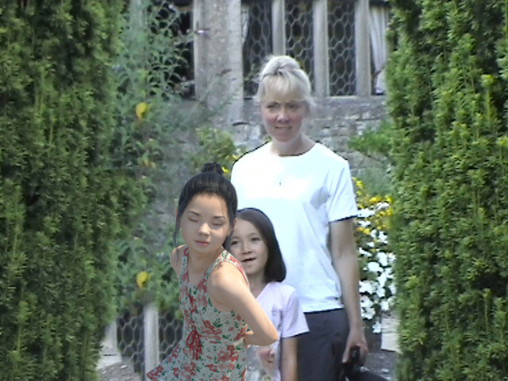

Having immigrated from Japan to England, and being queer in an all boys school, and being of mixed race and then having somewhat of a pseudo-American accent, I never really fit in anywhere. And the more I would try to fit in, the more obvious it was to the people around me that I wasn’t one of them, and so I turned inwards. I became very confident in myself and fell into a state of being where I could survive in any sort of setting or environment regardless of the demographic because there is no demographic out there that I’ll ever feel fully a part of.
Umico Niwa
U.N.
Kimi Hanauer
K.H.
There are these questions that people ask all the time, questions like, “Where are you from?” How do you negotiate those types of situations?
I guess I negotiate it with a lot of humor. I’m very used to being asked, “Where are you from? … No, where are you really from?” and I’ve even had people ask me—more so in high school and middle school—“What are you?”
As long as the person isn’t coming at me in a hateful manner, even if it is slightly disrespectful, I see that they are coming from a place of ignorance, and I try my best to inform them of where I was born, my parents, and so on, and I feel like I usually confuse them slightly. As long as they aren’t coming at me in a hateful manner, I feel that people have the ability to learn, to change their minds. I mean, personally, I find it confusing, myself—where I am from and what do I identify as. These are questions I ask myself every day. So to have someone else who has only ever lived in one place and has never met someone who is of mixed race, it makes sense that they will be more confused than I am. So I’m not going to feel outraged about it, I’ll try to have fun. Of course, sometimes it gets annoying. But people change overtime.
Have you seen change?
Yes. Not so much here in the United States, mainly because I didn’t grow up here, but back home in Japan, people are definitely changing in their world perspectives. My mom has blond hair and blue eyes, so when I was five or six, we were on the train, and I remember children sitting with their parents, pointing and saying, “Look at that alien, look at that foreigner, they have golden hair.” And the children, their minds were blown. I remember my mom not making light of it, but definitely being playful. She speaks fluent Japanese. She is just open with everyone, she just has this nature about her where she is able to connect with people. So she responded [to the children] in Japanese, something along the lines of, “Yes, it is golden! Would you like to look or touch?” And having witnessed that and growing up with that, that’s sort of become my approach too. Being trans and having come out of the closet about a year ago, that’s also how I approach people who have questions about what it means to transition. I give you permission to get really personal with me, so you are able to understand.
DSC_3803 by Umico.
That feels very generous of you. How do you navigate conversations around race that are less nuanced?
Typically at events where, let’s say, the event is based around issues of race and sexuality, I’ve found that I’ve been bothered by members of the audience who try to participate by interjecting themselves into an issue when it’s not necessarily needed, and it’s taking away from the bigger picture. And what they are saying, a lot of times, is really valid, but it’s like, c’mon, that’s not what this is.
There’s even times where I’m speaking with a group of people and the issue of being mixed-Asian comes up. In those times I will take a step back or say, “We are about to talk about what it means to be mixed-Asian.” It’s the case that I am the poster child for a mixed-Asian person. But it’s actually the case that the majority of people who are mixed-Japanese are Brazilian-Japanese people. All you ever see in the media, on TV or movies, it’s always the white American army dad with the small Japanese woman. Because of Western beauty standards and whiteness, when people talk about mixed-Asian people they think of me, instead of Japanese-Chinese kids, or Japanese-Brazilian kids, even though there are so many more Japanese-Brazilian kids.
I wasn’t aware of that until late into my high school years in Japan. I realized, oh my gosh, everyone who is mixed is white-mixed, yet everyone else outside of this are all Brazilian-Japanese. And there is a huge socio-economic divide between the two. So I always preface talking about my experience with this: Look, I am very, very privileged in the sense that, because of my whiteness in Japan, I am given the benefit of the doubt in a lot of things. My look is what a lot of Japanese people admire.
You are also bringing to light how social categorizations are dependent on context. Immigrants or people who have lived in multiple places are often asked to define themselves according to different terms depending on the place they are currently occupying.
It’s definitely the case that Japan, being an incredibly homogenous society, there was never a point at which I fit in. And in England, it’s somewhat similar. Baltimore is actually the first place [that] I consider home outside of the place where I had grown up. Because compared to Japan, the United States has so much more diversity, and there’s pockets of communities that are incredibly diverse all over the country and I’m in one of them. This is the first place that I have truly felt somewhat at ease.
Who are “your people”? How would you define “your people”?
About a year ago, while I was working at the art store, there was a customer who walked in ... The first time I had ever seen them. I can’t remember what I was doing, but they came over to talk to me. We were standing there, looking at each other, kind of trying to figure one another out. From their perspective, I probably looked like a boy who was maybe trans or feminine, and I was trying to figure out if this person transmasculine, or is he a trans man? And then at the same we were both half-Japanese. So we were just trying to have a conversation in order to just keep inspecting each other, like what’s going on? Who are you? You are definitely trans. You are definitely queer. You are definitely mixed. And through the conversation we were both fishing for information. We found out that we are both half-Japanese, I am a trans woman and they are a trans man, and that blew our minds because neither of us had ever met someone like that! We became really good friends, we were just so excited. That was the first time in my life that I ever felt that would have been applicable: “my people.”
Here, the trans and queer community, and the Asian community, there isn’t very much overlap between the different communities. And if there ever is an overlap, it is never the case that they can speak Japanese. The trans community here in Baltimore is mostly people that I wouldn’t hang out with or be friends with if I wasn’t trans. The demographic is very white and very far removed from my upbringing and my culture. Sometimes, when I go to trans events in Baltimore, other than being trans, queer, and oppressed, I feel like I really don’t have anything in common with the people. And then in Asian communities I’m like, wow, where’s the queerness?
Could “your people” also be people who don’t share any of those qualities but still have the “your people-ness” quality?
I guess my people then, in that context, would be people who have my back or accept me for who I am. Because some of my housemates aren’t themselves trans, and they are white, but I consider them my people because they share the experience of living with me. They accept me for who I am and they see my perspective to such a degree that they are able to empathize with what I struggle with on a daily basis. So in that sense, they are my people, even though they haven’t had the life experiences of being a woman going to an all-boys school or being mixed-Asian in a predominantly white space. They get me and they have my back, so they are my people.
DSC02362 by Umico.
A lot of what we’ve been talking about circles around existing in spaces of in-between, in terms of your identity and experiences, but also when thinking about family and community.
Neither of my parents are, to me, my people. My sister is my people, but then again, my sister … I’ve had conversations with her about sexuality, and she very much is cis, and so we don’t share that sort of aspect in our life in common. I have my chosen family, who is there for me for that. I’ve spoken to my parents and they say that neither of them are queer, or mixed, so yeah. There is definitely a divide for that reason. I know that I’ve had a lot of times where I’ve gotten very angry at both of my parents for not working hard enough to understand my perspective and see where I am coming from. I had a trip to England recently to see my sister graduate, and I was feeling overwhelmed with being in the countryside in England and being surrounded by definitely not my people, and my mother being one of them. I let my mother know on a couple occasions, like, please understand where it is that I am coming from, I am your child but I am not you. You’re white and I am not that. I’ve been around these cultures, Western culture, American culture, but I am never going to be white. My sister grew up in England since age 4, and after we had moved back to Japan for high school she actually moved back to England to college. She’s decided that’s where she wants to live and she is very much British. Her accent is British, her friends are British, and she sort of made that conscious decision herself, and I have talked to her about this, “You know, we are not white. Your friends don’t fully accept you, you are always going to be different.”
How does she respond?
Her response is that she acknowledges the fact that we are not white and that we will always be different. But she considers herself British, but obviously in the unique sense that she is also Japanese and American. She is paving her own way. I am just hoping that she never loses sight of the fact that no matter how hard you try to fit in, that there is something very special to hold on to.
What is something that you say 100 percent yes to?
Sardines on rice. There’s this royal old man on the sardines package—if you were offering me those packed in tuna in olive oil on rice, whatever kind of rice, I will 100 percent say yes any time.